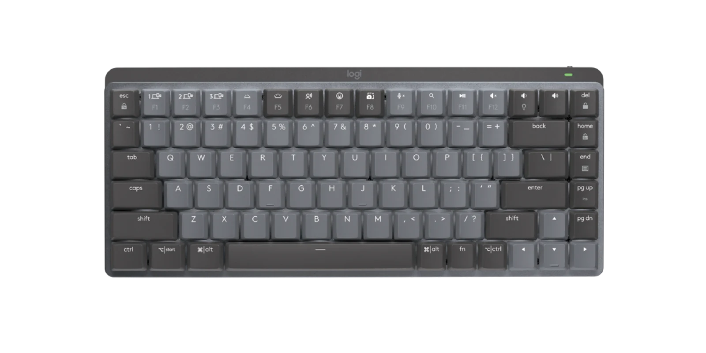
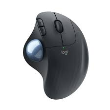
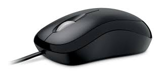
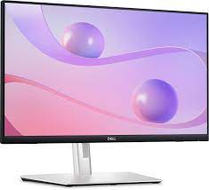
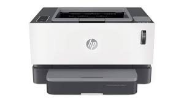

Computer Components
- Input is any data or instruction entered into the
memory of a computer.
- Any hardware component allows user to enter data and
instruction in to a computer.
Keyboard and Mouse are the most common
Input Devices which are used.
Keyboard
- Used to enter information into the computer and for giving commands.
- A standard computer keyboard is called a QWERTY keyboard

Ball Mouse

- An input device operated by rolling its ball across a flat surface.
The mouse is used to control the on-screen pointer by pointing and clicking,
double-clicking, or dragging objects on the screen.
Optical Mouse

- It is an advanced computer pointing device.
- It uses Light-Emitting Diode(LED) in place of the traditional mouse ball.
- Movement is detected by sensing changes in reflected light.
- The job of output unit is just the reverse of that of an Input Unit.
- It supplies information and results of computation to the outside world.
Monitor and Printer are the most common Output Devices which are used.
Monitor

- A display screen is used to provide "output" to the user. It is where you can view the
information you are working on.
Printer

- An output device that produces a hard of information. Information to the user is in
printed form.